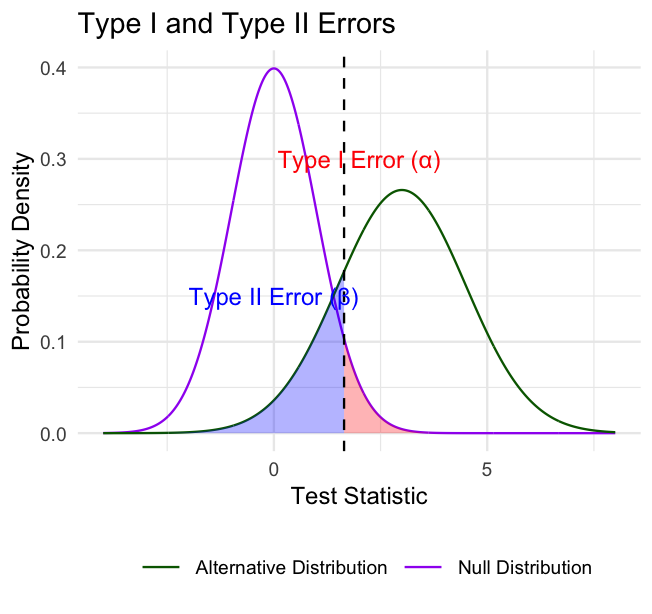
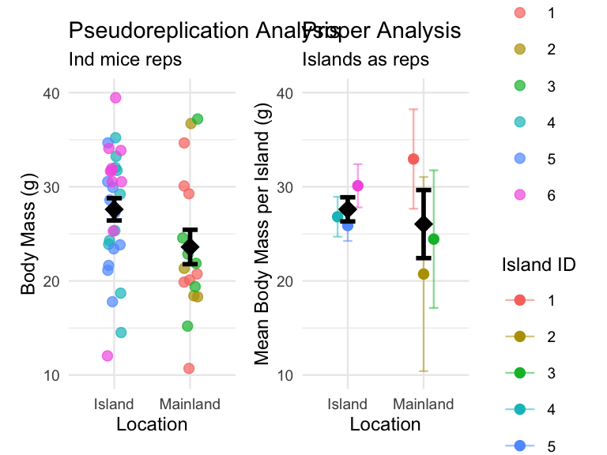

Lecture: Power and Type I & II Error
Errors and power
Inference
Power
P-values and the hypothesis-testing framework, Type I/II error, effect size, statistical power, error bars, and pseudoreplication — on the mouse-mass and class pine needle datasets.
Where We Left Off
Covered last time:
- Statistical inference fundamentals
- Hypothesis testing principles
- T-distributions
- One-sample, two-sample, and paired t-tests
Note
✅ Key idea from last lecture
A t-test gives you a p-value and a decision — reject or fail to reject H₀. Today asks the next question: how good is that decision, and how often could it be wrong?

Note
Today’s objectives
- Brief review
- Hypothesis tests for two populations
- Assumptions of parametric tests
- Power of parametric tests
- Introduction to non-parametric tests
Part 1 · Statistical Hypothesis Testing
Statistical Hypothesis Testing
- Major goal of statistics: inferences about populations from samples
- assign a degree of confidence to inferences
- Statistical hypothesis testing: a formalized approach to inference
- Hypotheses ask whether samples come from populations with certain properties
- Often interested in questions about population means — but other questions are of interest too
Note
📖 Reference
Gotelli & Ellison, A Primer of Ecological Statistics, Ch. 4 — Framing and Testing Hypotheses.

Part 2 · Hypothesis Components
Hypothesis Components
Useful hypotheses rely on specifying:
- H₀ — the hypothesis of “no effect”
- two samples from populations with the same mean
- or a sample is from a population of mean = X
- Hₐ (research or alternate hypothesis)
- the opposite of H₀
- predicts an effect of x on y
- but does NOT suggest a direction — that’s a prediction

Hypothesis Examples
Together, H₀ and Hₐ encompass all possible outcomes:
- H₀: µ = 0, Hₐ: µ ≠ 0 — mean equals 0 or it does not
- H₀: µ = 35, Hₐ: µ ≠ 35 — mean equals 35 or it does not
- H₀: µ₁ = µ₂, Hₐ: µ₁ ≠ µ₂ — mean of population 1 equals mean of population 2, or it does not
- H₀: µ > 0, Hₐ: µ ≤ 0 — can be directional: mean is greater than 0, or mean is not greater than 0
- this becomes a one-sided test, since it predicts only one direction
Part 3 · P-Values
Statistical Testing Framework
Statistical tests assess the likelihood of the null hypothesis being true.
- If H₀ is likely false, Hₐ is assumed correct
- More precisely: the long-run probability of obtaining our sample value (or a more extreme one) if the null hypothesis is true
- p(data | H₀) — the probability of observing the data given that H₀ is true
Understanding P-Values
Hypothesis tests are expressed as a p-value (0 = never, 1 = always).
Interpret a p-value as: the probability of obtaining a sample value of the statistic (or a more extreme one) if H₀ is true.
- High p-value: high probability of obtaining our sample statistic under H₀
- if H₀ were true, you would frequently observe data similar to your sample
- your observed results are quite compatible with what H₀ predicts
- Low p-value: low probability of obtaining our sample statistic under H₀
- if H₀ were true, you would rarely observe data this extreme
- your results are unusual under H₀ — either you witnessed a rare event, or H₀ may be incorrect
P-Value Interpretation
Statistical test results:
- p = 0.3 means that if I repeated the study 100 times, I would get this (or a more extreme) result due to chance 30 times
- p = 0.03 means that if I repeated the study 100 times, I would get this (or a more extreme) result due to chance 3 times
Which p-value suggests H₀ is likely false?
At what point do we reject H₀?
p < 0.05 is the conventional “significance threshold” (α = alpha).
p < 0.05 means: if H₀ is true and we repeated the study 100 times, we would get this (or a more extreme) result less than 5 times due to chance.
Note
✅ Key idea
α is chosen before data collection. It’s a policy about how much Type I error risk you’re willing to accept — not something you pick after seeing the p-value.
Significance Levels and Interpretation
- α is the rate at which we will reject a true null hypothesis (Type I error rate)
- Lowering α lowers the likelihood of incorrectly rejecting a true H₀ (e.g., 0.01, 0.001)
- Both hypotheses and α are specified BEFORE data collection and analysis
Traditionally, α = 0.05 is used as the cutoff for rejecting H₀. There is nothing magical about 0.05 — actual p-values should be reported, and α still needs to be decided prior to the study.
| p-value range | Interpretation |
|---|---|
| P > 0.10 | No evidence against H₀ — data appear consistent with H₀ |
| 0.05 < P < 0.10 | Weak evidence against H₀ in favor of Hₐ |
| 0.01 < P < 0.05 | Moderate evidence against H₀ in favor of Hₐ |
| 0.001 < P < 0.01 | Strong evidence against H₀ in favor of Hₐ |
| P < 0.001 | Very strong evidence against H₀ in favor of Hₐ |
Understanding P-Values Visually
A p-value is the probability of observing the sample result (or something more extreme) if the null hypothesis is true.
Common interpretations:
- p < 0.05: strong evidence against H₀
- 0.05 ≤ p < 0.10: moderate evidence against H₀
- p ≥ 0.10: insufficient evidence against H₀
Common misinterpretations:
- p-value is NOT the probability that H₀ is true
- p-value is NOT the probability that results occurred by chance
- Statistical significance ≠ practical significance
Note there’s a difference in how the hypotheses are stated for a one-sample vs. a two-sample t-test.
Part 4 · Historical Context
Historical Context

Fisher’s Perspective
“If p is between 0.1 and 0.9 there is certainly no reason to suspect the hypothesis tested. If it is below 0.02 it is strongly indicated that the hypothesis fails to account for the whole of the facts. We shall not often be astray if we draw a conventional line at .05 …”
— R.A. Fisher, on the p-value as an informal measure of discrepancy between data and H₀

Part 5 · Decision Errors
Decision Errors
- Even good studies can reach incorrect conclusions
- These are called “decision errors”
- There are two types of decision errors
- We want to know the probability of making each of them
Note
📖 Reference
Gotelli & Ellison, Ch. 4 — the “Errors in Hypothesis Testing” section covers exactly this material.

Type I and Type II Errors — Concept
- Type I error rate, α: wrongly reject H₀ when it’s true
- α = 0.05 means a Type I error rate of 5%
- Type II error rate, β: wrongly fail to reject H₀ when it’s false
- Power = 1 − β: the probability of correctly rejecting H₀ when Hₐ is true
- Inverse relationship between Type I and Type II error — but not a straightforward one
- Can result from chance — a sample not representative of the population
- Which type of error is more dangerous?

the dotted line is α = 0.05
Type I and Type II Errors — Illustrated
When making decisions based on hypothesis tests, two types of errors can occur:
Type I Error (False Positive)
- Rejecting H₀ when it’s actually true
- Probability = α (significance level)
- “Finding an effect that isn’t real”
Type II Error (False Negative)
- Failing to reject H₀ when it’s actually false
- Probability = β — “missing an effect that is real”
Statistical Power = 1 − β
- Probability of correctly rejecting a false H₀
- Increases with: larger sample size, larger effect size, lower variability, higher α level
The farther apart the means, or the lower the variance, the lower the β error — i.e., the higher the power.

Type I and Type II Errors — From Real Distributions
When making decisions based on hypothesis tests, two types of errors can occur:
Type I Error (False Positive) — rejecting H₀ when it’s actually true. Probability = α.
Type II Error (False Negative) — failing to reject H₀ when it’s actually false. Probability = β.
Statistical Power = 1 − β — increases with larger sample size, larger effect size, lower variability, higher α level.
The farther apart the means, or the lower the variance, the lower the β error — i.e., the higher the power.

Practice Exercise: Interpreting Errors and Power
Tip
Practice Exercise: interpreting p-values and errors
Given the following scenarios, identify whether a Type I or Type II error might have occurred:
- A researcher concludes that island mice size is larger, when in fact it is not.
- A study fails to detect a real difference in mouse size on islands when there is one, and concludes there is no effect.
- Let’s calculate the power of our t-test to detect a 1g difference in mass between sampling sites:
- Pooled standard deviation — the combined standard deviation of both groups, weighted by their respective degrees of freedom
- Cohen’s d — the standardized difference between means; here assuming a difference of 1 unit (g)
library(car)
library(patchwork)
library(tidyverse)
library(readxl)
m_df <- read_csv("data/mice_weights.csv") %>%
filter(!is.na(mass_g))
sidney_df <- m_df %>% filter(sampling_site == "Sidney Island")
vancouver_df <- m_df %>% filter(sampling_site == "Vancouver")
n1 <- nrow(sidney_df)
n2 <- nrow(vancouver_df)
sd_pooled <- sqrt((var(sidney_df$mass_g) * (n1-1) +
var(vancouver_df$mass_g) * (n2-1)) /
(n1 + n2 - 2))
# delta = 0.423: the standardized effect size (Cohen's d)
effect_size <- 1 / sd_pooled # Cohen's d
df <- n1 + n2 - 2
alpha <- 0.05
power <- power.t.test(n = min(n1, n2),
delta = effect_size,
sd = 1, # Using standardized effect size
sig.level = alpha,
type = "two.sample",
alternative = "two.sided")
power
Two-sample t test power calculation
n = 28
delta = 0.4231154
sd = 1
sig.level = 0.05
power = 0.3427604
alternative = two.sided
NOTE: n is number in *each* groupPart 6 · Statistical Power
What if We Calculated Power for the Pine Needles You Measured?
pine_switch_df <- read_excel("data/class_pine needle length switched.xlsx")
ps_df <- pine_switch_df %>%
group_by(group, tree_no, tree_char, side) %>%
summarise(length_mm = mean(length_mm, na.rm=TRUE))
ps_shady_df <- ps_df %>% filter(side == "shady")
ps_sunny_df <- ps_df %>% filter(side == "sunny")
pine_alpha <- 0.05
pine_n1 <- nrow(ps_shady_df)
pine_n2 <- nrow(ps_sunny_df)
pine_sd_pooled <- sqrt((var(ps_shady_df$length_mm) * (pine_n1-1) +
var(ps_sunny_df$length_mm) * (pine_n2-1)) /
(pine_n1 + pine_n2 - 2))
cat("Pooled SD:", round(pine_sd_pooled, 2), "mm\n\n")Pooled SD: 2.58 mm
Note
📖 Reference
Whitlock & Schluter, Ch. 14 — Designing Experiments, includes planning the sample size needed for a study.
# More realistic effect sizes to test:
observed_diff <- abs(mean(ps_shady_df$length_mm) - mean(ps_sunny_df$length_mm))
pine_effect_size_observed <- observed_diff / pine_sd_pooled
cat("Effect size for observed", round(observed_diff, 2), "mm difference: Cohen's d =", round(pine_effect_size_observed, 2), "\n")Effect size for observed 1.45 mm difference: Cohen's d = 0.56 pine_power_observed <- power.t.test(n = min(pine_n1, pine_n2),
delta = pine_effect_size_observed,
sd = 1,
sig.level = pine_alpha,
type = "two.sample",
alternative = "two.sided")
cat("Power for observed", round(observed_diff, 2), "mm difference:", round(pine_power_observed$power, 3), "\n")Power for observed 1.45 mm difference: 0.182 What Is Power?
Statistical power represents the probability of detecting a true effect (rejecting the null hypothesis when it is false). With a power of 97%, there’s a 97% chance of detecting a true difference of X units between the means of the two groups, if such a difference actually exists.
A power analysis like this is typically done for one of these purposes:
- Before data collection, to determine required sample size
- After a study, to evaluate if the sample size was adequate
- To determine the minimum detectable effect size with the given sample
Note
✅ Key idea
With 97% power, this test has excellent ability to detect the specified effect size. Generally, 80% power is considered acceptable — so 97% indicates a very well-powered study for detecting a difference of this size between the groups.
Part 7 · Error Bars
Error Bars and Their Interpretation
Error bars are graphical representations of the variability of data that show:
- The precision of a measurement
- The uncertainty around an estimate
- A confidence interval for a parameter
Common types of error bars:
- Standard Error (SE) — shows precision of the mean
- Standard Deviation (SD) — shows variability in the data
- Confidence Interval (CI) — shows the plausible range for a parameter
When interpreting graphs:
- Always check what the error bars represent
- Non-overlapping 95% CI bars suggest statistically significant differences
- Error bars help assess both statistical and practical significance

Part 8 · Pseudoreplication
Sampling and Pseudoreplication
Pseudoreplication occurs when measurements that are not independent are analyzed as if they were independent.
- A critical consideration in experimental design
- Results in underestimated standard errors and confidence intervals
- Leads to inflated Type I error rates (false positives)
Examples of pseudoreplication:
- Measuring the same individual multiple times
- Treating multiple fish from the same tank as independent
- Using multiple data points from a single site
How to avoid pseudoreplication:
- Identify the true experimental unit
- Use appropriate statistical techniques (e.g., mixed models)
- Be clear about the level of replication

Summary and Key Takeaways
Key concepts covered:
- P-values measure evidence against the null hypothesis
- Not the probability that H₀ is true
- Should be interpreted in context with effect size
- Hypothesis testing provides a framework for making decisions
- Null and alternative hypotheses must be specified beforehand
- α level determines the Type I error rate
- Type I and Type II errors represent different kinds of mistakes
- Type I (α): false positive — rejecting a true H₀
- Type II (β): false negative — failing to reject a false H₀
- Statistical power = 1 − β
- Error bars communicate uncertainty in different ways
- Always check what type of error bar is shown
- CI bars help assess statistical significance
- Pseudoreplication inflates significance
- Identify true experimental units
- Account for non-independence in analysis